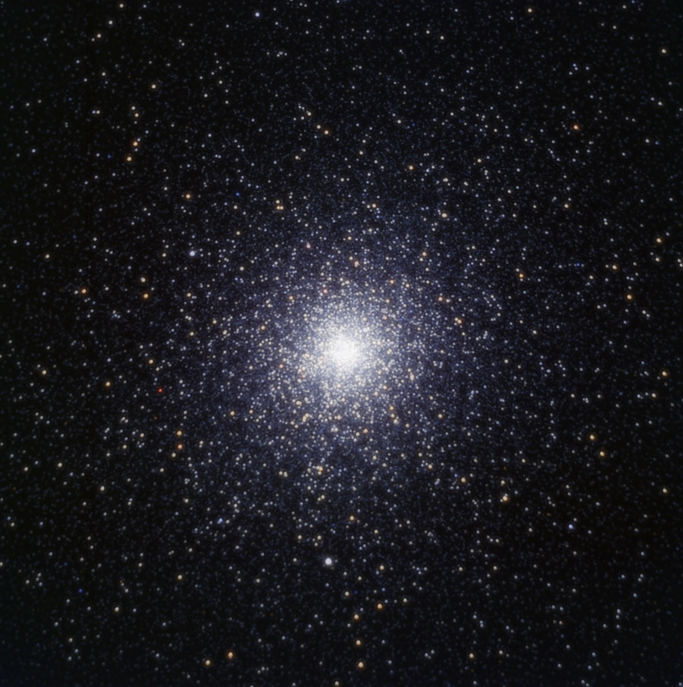
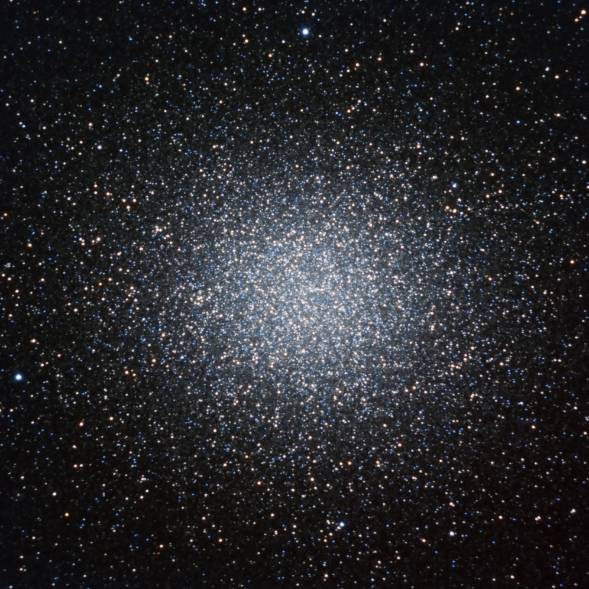

These two famous objects were targeted recently in order to test some of the features of the PixInsight image processing software.
47 Tuc (NGC 104) is comprised of several BVR sub frames using 60s exposures. Omega Centauri (NGC 5139) has been captured using photographic RGB filters.
(click on images to enlarge)

